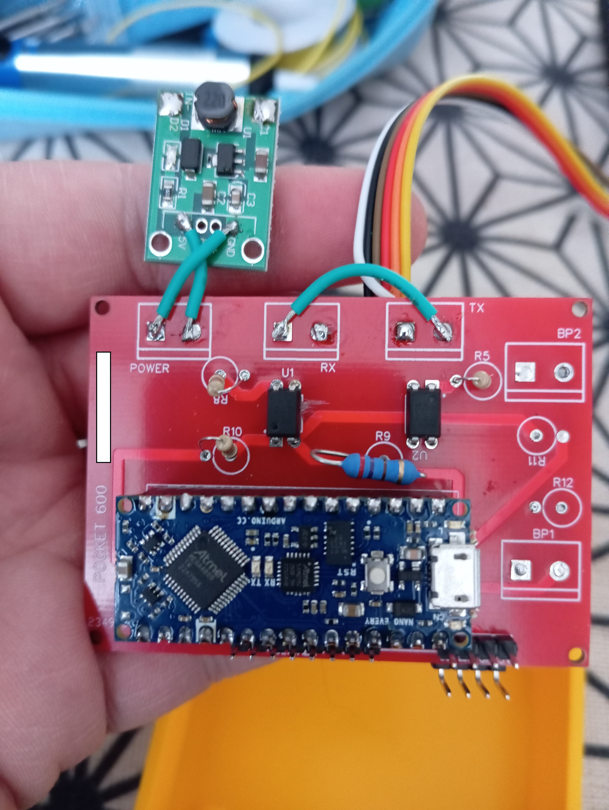
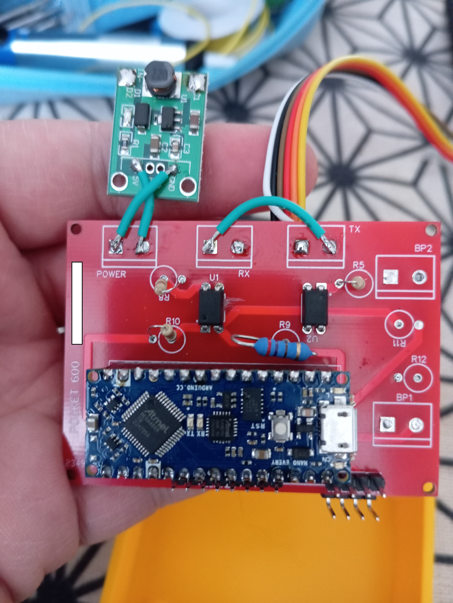

📟 Enregistreur de paramètres automate
🧪 Contexte et Origine
Face à la difficulté croissante d’utiliser des enregistreurs de données logiciels sur des systèmes d’exploitation obsolètes, et contraint de maintenir des équipements anciens, ce projet est né du besoin de disposer d’un outil indépendant, autonome et fiable. L’idée de créer un enregistreur sur microcontrôleur s’est imposée naturellement pour échapper à l’obsolescence programmée des solutions informatiques classiques.
Bien qu'une solution existait déjà, celle-ci se révélait peu flexible et limitée à un nombre réduit de variables. Mon système, plus robuste, plus simple à mettre en place, et autoalimenté par l’unité centrale, offre la possibilité d’enregistrer jusqu’à 27 variables en simultané, couvrant un éventail plus large de besoins terrain.
🔍 Fonctionnement et Performances
L’enregistreur capte tous types de variables issus d’un automate SMC600 via une liaison série à 19200 bauds. L’ensemble des données est consigné sur une carte microSD jusqu’à 32 Go. Une première lecture complète des variables est effectuée au démarrage, horodatée et utilisée comme référence. Par la suite, l’appareil détecte toute variation et n’enregistre que les écarts observés, optimisant ainsi le stockage et la pertinence des logs.
Les paramètres à surveiller sont configurés directement depuis un petit clavier embarqué, et les résultats sont enregistrés dans un fichier texte lisible sous Excel, ce qui facilite l’analyse et le traitement.
⚙️ Matériel et Interface
Le cœur du dispositif est un Arduino Every, hérité d’un précédent projet de diagnostic. Il est associé à un écran LCD 1602 I2C permettant de visualiser et configurer les options de démarrage. Le boîtier est de conception personnelle, imprimé en PLA pour allier robustesse et légèreté. Il a été pensé pour résister aux conditions d’un environnement industriel, sans fioritures, dans une esthétique brute et fonctionnelle.
L’alimentation est fournie directement par l’automate via son unité centrale, évitant ainsi toute source externe d’alimentation. Le câblage est simple et direct, via un bornier relié au port série de l’automate.
Images :
 


🧩 Utilisation et Perspectives
L’utilisation est pensée pour être à la portée de tous : une fois la liste des variables choisie, le système démarre automatiquement et enregistre de manière autonome. Si l’analyse des fichiers générés nécessite un minimum de compétences, la mise en œuvre de l’outil ne demande qu’une prise en main rapide. La durée d’enregistrement est pratiquement illimitée, dépendant uniquement de la capacité de la carte SD et du rythme des changements détectés.
À ce jour, le système a été spécifiquement testé et optimisé pour les automates SMC600. Toutefois, un développement similaire pourrait être envisagé pour d’autres automates comme les APRIL 1000 ou les Premium, sous réserve d’adapter le câblage et la communication.
💡 En résumé
Ce projet incarne une réponse concrète à un besoin terrain : obtenir un diagnostic fiable et autonome sans dépendre de logiciels vieillissants. Avec son firmware évolutif, son fonctionnement optimisé et son approche minimaliste, cet enregistreur DIY constitue un véritable allié pour les techniciens de maintenance et les automaticiens soucieux de conserver la maîtrise de leur outil de travail.